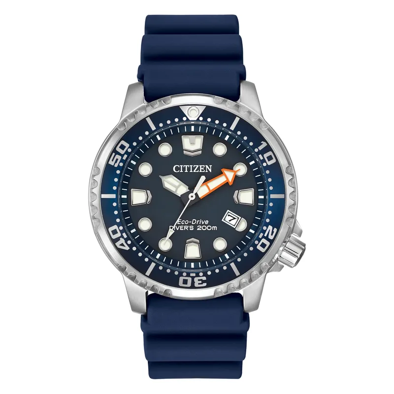

Encyclopedia / Citizen / Promaster Diver Eco-Drive BN0151-09L

Current deal · verified Oct 19, 2026, 10:23 PM ET
$360 List $450
Save $90 (20%) · new · Citizen (direct)
Ref. BN0151-09L · Sale price shown on citizenwatch.com
Sold direct by Citizen on its US site, so it comes with Citizen's own warranty. The $450 is Citizen's own crossed-out list price. Prices change fast; check the store before you buy.
What it really costs
| Market | Price | Source |
|---|---|---|
| Citizen list price | $450 (ref. BN0151-09L) | citizenwatch.com |
| New at Citizen (direct) | $360 | Citizen (direct) |
All prices in USD, checked Oct 19, 2026 (ET). Pre-owned ranges are the middle 80% of asking prices on the first Chrono24 results page for that ref (about 60 listings, used and some unworn), fixed-price listings only. Grey-market = brand-new from a non-authorized dealer.
Buying guide
Key references
| Ref. | What it is | US retail |
|---|---|---|
| BN0151-09L | Promaster Diver Eco-Drive BN0151-09L | $450 |
Which one I'd pick
Why buy: it never needs a battery change and costs a fraction of any mechanical diver here.
What to check before you buy
- Exact reference: dial colour, size and strap change the price. Match the full ref (BN0151-09L) before comparing deals.
- Returns: check the store's return window and whether opening the box or removing stickers affects it.
Alternatives worth a look
- Seiko Prospex Samurai: Mechanical Seiko diver. (41.7 mm Stainless Steel, Seiko Caliber 4R35, retail $595 (list price per Jomashop))
- Tissot Seastar 1000 Powermatic 80: Swiss automatic diver. (43 mm Stainless Steel, POWERMATIC 80.111, retail $925 (list price per Jomashop & WatchMaxx))
- TAG Heuer Formula 1: TAG's quartz sport watch. (41 mm Stainless Steel, Quartz (per WatchMaxx), retail $2,050 (list price per Jomashop & WatchMaxx))
History
Citizen traces its origins to the Shokosha Watch Research Institute, founded in 1918, and began marketing its solar-charging technology under the Eco-Drive name in the mid-1990s.
Citizen describes the BN0151-09L as an ISO-certified diver, powered by light (Caliber E168), with a 44 mm stainless steel case, dark blue polyurethane strap, one-way rotating bezel and 200 m water resistance.
Specifications
| Brand | Citizen |
|---|---|
| Model | Promaster Diver Eco-Drive BN0151-09L |
| Key references | BN0151-09L |
| Launch year | Not confirmed |
| Case | 44 mm stainless steel |
| Movement | Eco-Drive Caliber E168 (light-powered) |
| Power reserve | Not confirmed |
| Water resistance | 200 m |
| Approx. US retail (Oct 2026) | $450 (BN0151-09L, per Citizen) |
Specs from the retailer (Jomashop/WatchMaxx) or brand product page linked above for the main reference; see our research notes for which. Retail prices are list prices, not market value, and change often.
Highlights
- Eco-Drive solar, Caliber E168
- 44 mm steel case
- 200 m, ISO-certified diver
FAQ
How much is the Citizen Promaster Diver Eco-Drive BN0151-09L?
Retail: $450. New, the best verified price was $360 at Citizen (direct) (checked Oct 19, 2026, 10:23 PM ET).
What movement does the Promaster Diver Eco-Drive BN0151-09L use?
The BN0151-09L checked here uses the Eco-Drive Caliber E168 (light-powered).
How big is the Promaster Diver Eco-Drive BN0151-09L?
44 mm stainless steel.
Is the Promaster Diver Eco-Drive BN0151-09L water resistant?
Yes, it's rated to 200 m.
Want this watch for less?
Every week I hunt down genuine deals on watches like the Promaster Diver Eco-Drive BN0151-09L and send the best ones. Free, one email a week.
Get the free weekly issuePrices and availability last checked Oct 19, 2026. No affiliate links: I don't earn anything if you buy. Sources are listed in our research notes and linked above.